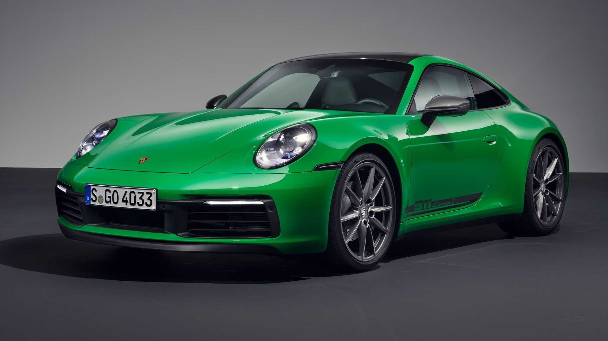

El Porsche 911 es un automóvil deportivo de lujo producido por el fabricante alemán Porsche AG, desde 1964. A través de los años, ha pasado por varias regeneraciones. De todas formas, muchas de las características del modelo original se conservan, como su configuración «todo atrás», su carrocería coupé fastback, el motor bóxer de seis cilindros y un interior con configuración 2+2 plazas. Desde la fundación de Porsche, la empresa solamente fabricaba el modelo Porsche 356 al que posteriormente reemplazó. Aunque fuese un coche notable, lo cierto era que el modelo basado en el proyecto del Volkswagen Tipo 1, comenzaba a demostrar señales de cansancio alrededor del final de los años 1950. Así, en este período y al mismo tiempo que invertía en las futuras líneas 356 B y C, Porsche comenzó el desarrollo de un modelo íntegramente nuevo. Fuera de Europa, el 356 consiguió ganar dentro de su categoría la Carrera Panamericana en 1952 y 1953, que se trataba de una competición tipo rally a través de la República Mexicana, por lo que las victorias en esta carrera fueron el origen de la denominación "Carrera" utilizado para los 356 y 911. Por tratarse de una empresa pequeña en la época, Porsche llevó bien en serio el desarrollo del sucesor de su principal y única línea de automóviles, sabiendo que un fracaso podría poner en dificultades a la empresa. Así, entre 1959 y 1961 varios modelos fueron producidos. El modelo 695 T-7 de 1961, se mostró el más prometedor de ellos, producto de los esfuerzos de Ferdinand Alexander Porsche ("Butzi") y Erwin Komenda. Incluso se cuenta que la elección de la fábrica de carrocerías Reutter fue, principalmente, para evitar conflictos entre Butzi y Komenda. Inicialmente planeado como una línea adicional, por poco no fue direccionado al nicho del mercado ocupado por los sedanes Mercedes-Benz. Con una batalla 100 mm (3,9 pulgadas) más larga que los del 356, el 695 era prácticamente un cuatro plazas, con un motor plano de seis cilindros, la misma estructura del 356 y la carrocería básica de lo que vendría a ser el 911. Sin embargo con la parte trasera muy diferente, ya que el coche era básicamente un sedán, quedándose entre la configuración 2+2 y cuatro plazas. Los motores probados fueron los del 356 Carrera 2 (Type 587/1) y el más complejo Type 745, un seis cilindros de 1991 cm³ (2 litros), un poco diferente del motor del 901 desarrollado posteriormente.